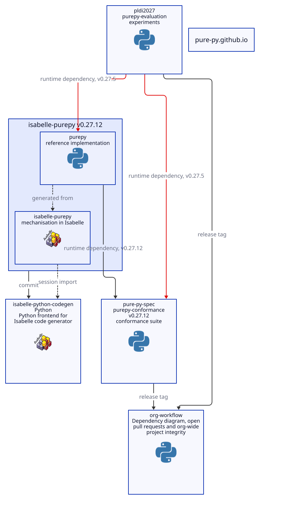

2026-11-17 00:10 UTC
2026-11-17 00:10 UTC
| Target | Check | Result | Detail |
|---|
Updated UTC.

| Code generated from target | |
| Isabelle session import | |
| Pin (moved by hand) | |
| Follows target | |
| Pin behind latest release |
| Repository | # | Title | Author | Review | Checks | Updated |
|---|---|---|---|---|---|---|
| isabelle-python-codegen | #23 | Formatting tweaks in tree weight example | dorchard | none | passing | 2026-11-10 |
| pure-py.github.io | #46 | Add missing page `<title>`s and move async URL decoding logic | jacobpake | review required | passing | 2026-11-17 |
| Repository | # | Title | Author | Review | Checks | Updated |
|---|---|---|---|---|---|---|
| isabelle-python-codegen | #14 | [WIP] Type annotations | nikolaushuber | none | passing | 2026-11-03 |
| pure-py.github.io | #48 | Scope undo and redo history by tab | rolyp-claude-bot | approved | passing | 2026-11-17 |
| Repository | Issue | Title |
|---|---|---|
| pldi2027 | #45 | Section 2.1 still mentions directory names (but the figure doesn't) |
| pldi2027 | #52 | Future for PurePy, with more 'mutation-like' behaviour |
| pure-py-spec | #56 | Default arguments |
| pure-py.github.io | #35 | Automate version bump and build time check/test it works |
| Repository | Issue | Title |
|---|---|---|
| pure-py-spec | #364 | NumPy support |
| Repository | Issue | Title | Milestone |
|---|---|---|---|
| pure-py-spec | #343 | Modules binding str | pure-py-spec 1.1 |
| pure-py-spec | #347 | `@functools.cache` | pure-py-spec 1.1 |
| Repository | Issue | Title | Open sub-issues |
|---|---|---|---|
| pure-py-spec | #356 | Submission | #292, pldi2027#46 |
| pure-py.github.io | #6 | Integrate playground into website | #28 |